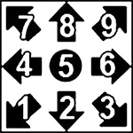

|
|
Artigos
/ gbahawk
(GBAHawk)
Last Update: 15/07/2026
https://github.com/alyosha-tas/GBAHawk
Emulador WIP, GBAHawk possui o recurso
de link cable.
Doom (USA, Europe).xml
<BizHawk-XMLGame System="GBAL" Name="Doom (USA, Europe)">
<LoadAssets>
<Asset FileName="./Doom (USA, Europe).gba" />
<Asset FileName="./Doom (USA, Europe).gba" />
</LoadAssets>
</BizHawk-XMLGame>
OK:
Doom (USA, Europe)
Double Dragon Advance (USA)
Dragon Ball - Advanced Adventure (USA)
Dragon Ball Z - Bukuu Tougeki (Japan)
Dragon Ball Z - Supersonic Warriors (USA)
Guilty Gear X - Advance Edition (USA)
King of Fighters EX 2, The - Howling Blood (USA)
King of Fighters EX, The - NeoBlood (USA)
Mario Kart - Super Circuit (USA)
Mortal Kombat - Deadly Alliance (USA) (En,Fr,De,Es,It)
Mortal Kombat - Tournament Edition (USA) (En,Fr,De,Es,It)
Mortal Kombat Advance (USA)
SEGA Rally Championship (USA)
Sonic Battle (USA) (En,Ja,Fr,De,Es,It)
Star Wars - Episode III - Revenge of the Sith (USA) (En,Fr,Es)
Street Fighter Alpha 3 (USA)
Super Puzzle Fighter II (USA)
Super Street Fighter II Turbo - Revival (USA)
Turok - Evolution (USA)
FREEZE:
Altered Beast - Guardian of the Realms (USA)
Bomberman Tournament (USA, Europe)
ChuChu Rocket! (USA) (En,Ja,Fr,De,Es)
Doom II (USA)
Dragon Ball GT - Transformation (USA)
Dragon Ball Z - Taiketsu (USA)
Final Fight One (USA)
Jet Grind Radio (USA)
Need for Speed - Most Wanted (USA, Europe) (En,Fr,De,It)
Need for Speed - Porsche Unleashed (USA)
Need for Speed - Underground (USA, Europe) (En,Fr,De,It)
Need for Speed - Underground 2 (USA, Europe) (En,Fr,De,It)
Sonic Advance (USA) (En,Ja)
Sonic Advance 2 (USA) (En,Ja,Fr,De,Es,It)
Sonic Advance 3 (USA) (En,Ja,Fr,De,Es,It)
Tekken Advance (USA)

Super Street Fighter II
Turbo Revival
SSF2TR no Link Cable trava se voce executar qualquer Air Grab e/ou Command
Grab
Pressionar A/B por 6 frames, estando MidScreen em relação ao
adversário, transforma o LP/K em MP/K
Ashura Senkuu do Akuma, o TeleTransporte, foi simplificado para 4/6+L+R/A+B
https://youtube.com/shorts/KPobnnRoKrA
Street Fighter Alpha 3
Cheats, Tela de Titulo:
Todos os Personagens
Esquerda, Direita, Baixo, Direita, L, L, A, L, L, B, R, A, Cima
Todos os Modos ISM-Plus
A, Cima, A, L, R, Direita, L, Direita, A, Baixo, Direita
Todos os Modos (Mazi, Saikyou, etc.)
L, Direita, A, R, Cima, L, Direita, B, A, Cima, Direita, Baixo, Direita
(WIP...)
|
|